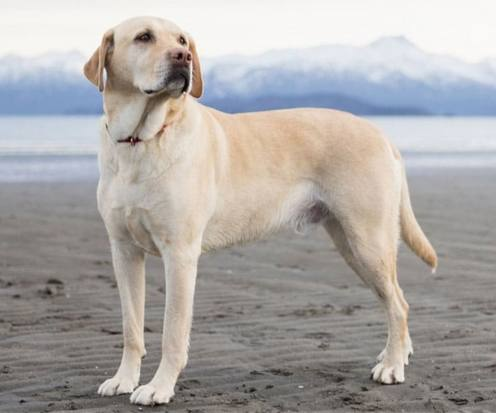

Лабрадор ретривер

Происхождение: Канада (о. Ньюфаундленд)
Размер: Крупные (рост: 54–57 см, вес: 27–40 кг)
Характер: Дружелюбные, активные, общительные
Особенности: Очень любят есть, склонны к ожирению. Хорошие поводыри и спасатели. Легко обучаются
Здоровье: Проблемы с суставами, ушами